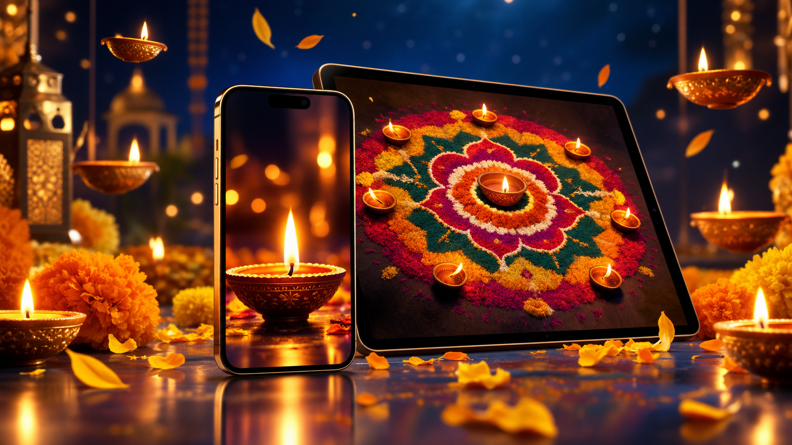

Diwali Wallpapers 2026: HD Diya & Rangoli Backgrounds
Published October 12, 2026 · Updated October 12, 2026 · By EventBuzz Team

Every year as Diwali approaches, screens change with it. The festival of lights is one of the few occasions when people deliberately redecorate their phones and computers, swapping everyday wallpapers for something that glows. A good Diwali wallpaper is not just a pretty picture — it is sized for your screen, composed so your icons and clock sit comfortably on it, and saved at a resolution that stays crisp instead of blurry. This guide to Diwali wallpapers for 2026 covers the styles worth looking for, the right sizes for phones and desktops, and exactly how to set them on any device.
What Makes a Great Diwali Wallpaper
Wallpapers live under your icons, widgets, and the lock-screen clock, so they behave differently from pictures you send to friends. Before choosing one, check four things:
- Glow with breathing room: the best Diwali wallpapers put the light source — a diya flame, a string of lights — slightly off-centre, leaving a darker area where the phone clock or desktop icons can sit without fighting the image.
- Dark or mid-tone backgrounds: deep blues, maroons, and blacks make diya flames pop and keep white text readable. All-white or busy bright images strain the eyes and hide icon labels.
- Symmetry helps: rangoli mandalas and rows of diyas are naturally symmetrical, which looks calm behind app grids. Asymmetric firework bursts can work on a desktop but often clash with phone widgets.
- Sharpness at your resolution: a wallpaper looks crisp only if the image is at least as large as your screen. Blurry-looking Diwali backgrounds almost always come from a file that was too small, not a bad design.
Best Diwali Wallpaper Styles for 2026
Diwali wallpaper styles fall into a few clear families. Knowing which family you want saves a lot of scrolling:
- Diya close-ups: a single row of lit clay diyas against a dark background. Warm, classic, and the most popular choice for phone lock screens because the flames draw the eye while the dark edges keep the clock legible.
- Rangoli mandalas: intricate circular rangoli patterns in bright powders. These work beautifully as phone wallpapers since symmetry frames the app grid, and the detail rewards a closer look.
- Lantern and light streets: hanging paper lanterns, fairy lights, or illuminated temple streets. Depth and receding rows of light make these superb desktop wallpapers — the left and right edges stay calm for desktop icons.
- Fireworks at night: dramatic and celebratory, best as a desktop background or a phone wallpaper on devices that let you pin the clock to a dark patch of sky.
- Temple and ghat scenes: illuminated temples, rivers lined with floating diyas, city skylines dressed for the festival. Rich storytelling wallpapers for large desktop monitors.
- Minimal gold-on-dark: a single diya outline, a small "Happy Diwali" in gold script, or a subtle diya icon pattern on black. Ideal for people who find photo-realistic wallpapers busy, and genuinely great on OLED screens.
A practical trick: pick one style for the lock screen (bold, glowing, simple) and a calmer one for the home screen (dark, minimal) so your icons stay readable while the festival still greets you every time you pick up the phone.
Phone Wallpaper Picks: Lock Screen vs Home Screen
Phones are where Diwali wallpapers matter most, and the two screens want different things. The lock screen shows the clock large and centred near the top, so choose an image with its brightest detail in the lower half — a row of diyas across the bottom, flames rising from the base. The home screen carries app icons and folders, so go darker and simpler here: a deep-coloured rangoli corner, a subtle diya pattern, or a dark gold texture.
For resolution, aim high: most 2026 phones have screens at or above 1080×2400, and flagship models reach 1440×3120. A wallpaper file of 1440×3120 or larger covers virtually every phone; 1080×1920 is the safe minimum. Portrait orientation is non-negotiable — a landscape photo cropped to a phone will lose its best details. If you love a landscape Diwali scene, set it on your desktop instead, or crop to the most glowing square of the scene rather than stretching the whole thing.
Desktop and Laptop Wallpaper Picks
Desktops are landscape, so pick images that are composed horizontally: lantern streets receding into the distance, a temple skyline at night, or a wide fireworks burst with dark sky at the edges for icon space. Standard targets are 1920×1080 (Full HD) for most laptops, 2560×1440 (QHD) for larger monitors, and 3840×2160 (4K) for big displays. Setting a 1080p image on a 4K monitor is the most common cause of "why does my wallpaper look fuzzy", so match or exceed your screen's resolution.
Multi-monitor users get a bonus trick: Diwali panorama scenes — long temple skylines or continuous diya rows — stretch beautifully across two screens. Set the taskbar and dock positions before judging the crop, and remember that the centre of the image is where windows overlap, so keep the focal glow slightly to one side of centre.
How to Set a Diwali Wallpaper on Your Phone
On iPhone: save the image to Photos, then open Settings > Wallpaper > Add New Wallpaper > Photos, pick the image, pinch to position the glow where you want it, and assign it to the lock screen, home screen, or both. iOS shows a live preview with the clock, so you can nudge the image until the time sits on a dark patch.
On Android: long-press the home screen > Wallpaper & style > pick the saved image from your gallery, adjust the crop box, and choose lock screen, home screen, or both. Many Android phones offer a "depth effect" or blur for the home screen — turning it on slightly softens a busy Diwali photo behind your icons.
After setting it, lock and unlock the phone once and glance at the home screen grid. If the clock overlaps a flame or an icon label disappears into brightness, re-crop so the brightest part sits elsewhere. Two minutes of nudging here is the whole difference between a wallpaper that feels festive and one that feels cluttered.
How to Set It on a Windows PC or Mac
On Windows: right-click the desktop > Personalize > Background, browse to the saved image, and set "Choose a fit" to Fill (never Stretch, which distorts diya flames into ovals). Windows also lets you set a slideshow — point it at a folder of Diwali wallpapers and let the glow rotate every few minutes.
On Mac: open System Settings > Wallpaper, click Add Photo or drag the image in, and set it to Fill Screen. macOS handles retina displays well as long as the source image is 1920×1080 or larger on a standard screen, 2560×1600 or larger on a Retina MacBook.
A festival-season touch: set your desktop to a calm temple-night scene and your phone lock screen to a bold diya close-up. The two devices then feel like a matched set without either one shouting.
Wallpaper Quality Tips: Avoid the Blurry Look
- Never stretch: if an image is the wrong shape for your screen, crop it or use Fill; stretching warps flames and rangoli circles visibly.
- Download the largest file offered: thumbnail previews are for choosing, full-size files are for setting. On search and stock sites, always open the full image before saving.
- Beware watermarks: free wallpaper collections sometimes stamp logos across the centre. Check the full image before you fall in love with a thumbnail.
- Mind the date: set your Diwali wallpaper a day or two before the festival — Sunday, November 8, 2026 — and it stays fresh through the whole five-day celebration rather than feeling stale by the main night.
- Keep a festival folder: save your favourites each year in one folder. Next Diwali you will have a ready gallery instead of starting the search from zero.
A wallpaper is the room you live in all day. Choose the glow you want to see a hundred times daily — calm for the home screen, celebratory for the lock screen.
Frequently Asked Questions
What size should a Diwali phone wallpaper be?
At least 1080×1920 pixels in portrait orientation; 1440×3120 or larger is ideal for modern phones. The image should match or exceed your screen resolution to stay crisp.
What is the difference between Diwali images and Diwali wallpapers?
Diwali images are pictures you share with family and friends, like greetings and photos. Wallpapers are background images you set on your phone or computer screen, sized and composed to sit behind your icons and clock.
How do I set a Diwali wallpaper on iPhone?
Save the image to Photos, then go to Settings > Wallpaper > Add New Wallpaper > Photos, pick the image, position it in the preview, and assign it to the lock screen, home screen, or both.
How do I set a Diwali wallpaper on Android?
Long-press the home screen, choose Wallpaper & style, select the saved image, adjust the crop, and apply it to the lock screen, home screen, or both.
Why does my wallpaper look blurry?
The most common cause is a source image smaller than your screen resolution. Re-download the largest version available, and use Fill rather than Stretch so the image is not distorted.
When is Diwali in 2026?
Diwali 2026 falls on Sunday, November 8. Set your wallpaper a day or two before so it stays fresh through the whole five-day festival.
Conclusion
A Diwali wallpaper is a small thing you see a hundred times a day — worth the three minutes it takes to get right. Pick a glowing style with a dark, calm area for your clock and icons, match the file to your screen size, and set it a day before the festival. Your phone greets you with light; your desktop glows behind your work; and the festival follows you everywhere.
More Diwali help from EventBuzz:
Happy Diwali — may your screens glow as brightly as your diyas!
Diwali Celebration Picks
Diyas, lights and decorations to brighten your Diwali 2026.


Prices shown at the time of publishing and can change. Links take you to AliExpress, where shipping and delivery details are shown.